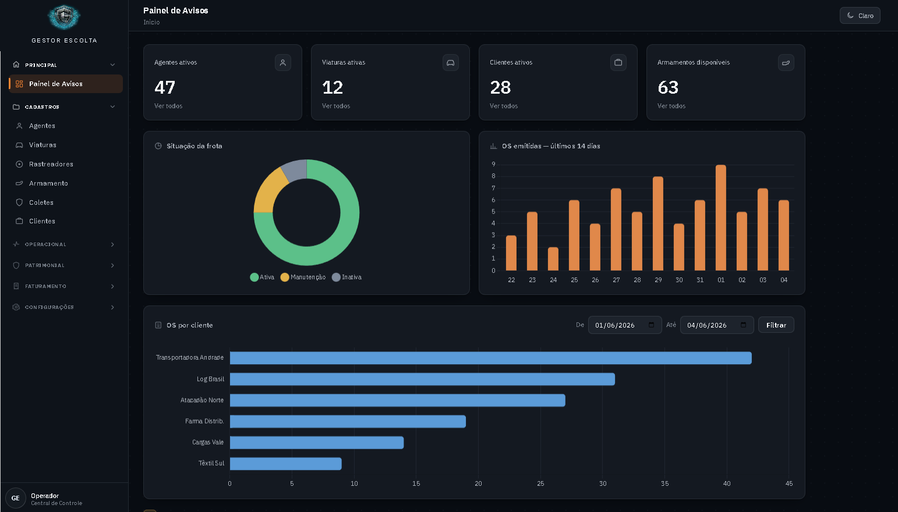
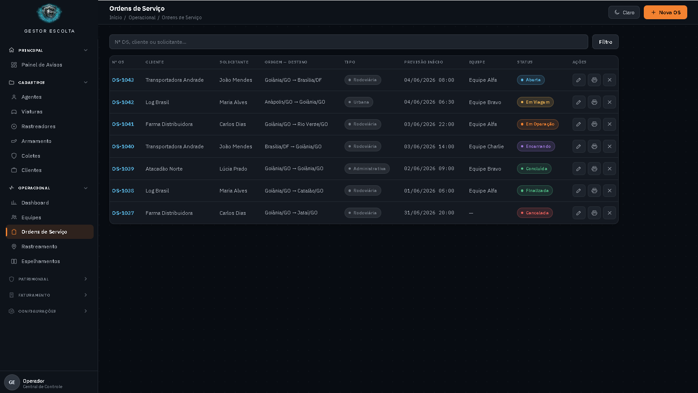
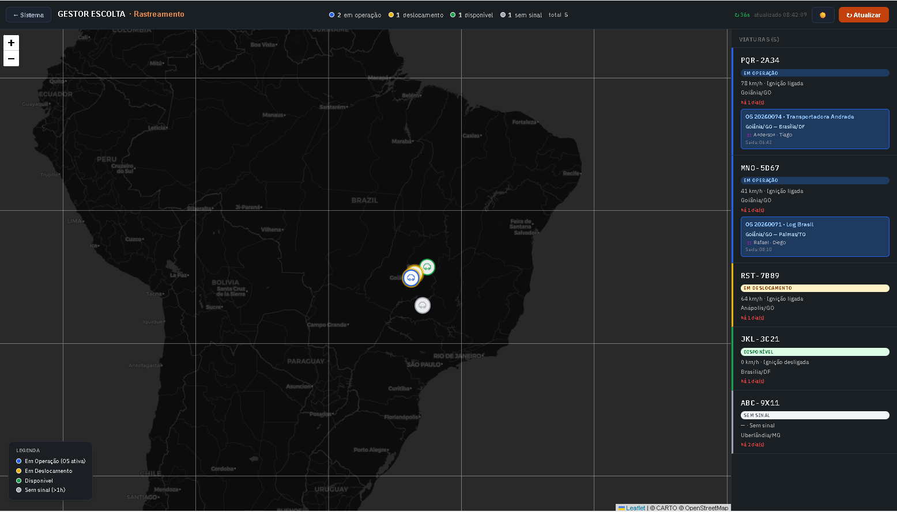

Automatize fluxos operacionais complexos — da solicitação ao boletim de medição. Controle total de frotas, agentes, rastreamento e compliance, em uma plataforma robusta, auditável e pronta para grandes contratos.
Em pouco mais de um minuto: painel de avisos, ordens de serviço, app do agente, rastreamento, acompanhamento do cliente, boletim de medição e financeiro.
Do painel de indicadores ao mapa de rastreamento ao vivo — esta é a plataforma que sua equipe usa todos os dias.



Registro em tempo real
Cada marco da escolta — início, chegada, paradas e incidentes — capturado no celular com GPS, foto e hora exatos. Da viatura ao painel da central, sem papel e sem atraso.
Construído sobre uma base de dados consolidada em PostgreSQL, o Gestor Escolta garante integridade máxima de informações e logs operacionais — com segurança de permissões granular e automação inteligente de relatórios.
Transição concluída para uma arquitetura de dados de nível corporativo — projetada para volume, concorrência e auditoria sem perda de desempenho.
Cada usuário enxerga e opera exatamente o que sua função exige — nada além. Permissões de CRUD configuráveis por cliente, módulo e tipo de relatório.
Integração nativa com as principais plataformas do mercado para sincronizar, em tempo real, informações de frota, posição e telemetria — eliminando digitação manual e divergências.
As informações de frota fluem automaticamente das plataformas líderes para o Gestor Escolta — sem retrabalho, sem planilhas paralelas.
Da emissão da ordem de serviço ao boletim de medição — cada etapa controlada, registrada e auditável.
Emissão, acompanhamento e cancelamento de OS com registro em campo via app, fotos e GPS.
Viaturas, manutenção, documentação e disponibilidade — integrados ao rastreamento em tempo real.
Cadastro, habilitações (CNH, CNV, cursos), alertas de vencimento e treinamento contínuo.
Mapa operacional ao vivo com posição das equipes, status de operação e telemetria integrada.
Formatação automatizada para faturamento, com exportação para PDF e Excel e trilha financeira.
Indicadores operacionais e gerenciais em tempo real, com sincronização Power BI.
Conformidade rigorosa, auditoria de processos e segurança da informação — o padrão que grandes indústrias e multinacionais exigem de seus parceiros de escolta.
Processos aderentes às exigências de propostas comerciais e editais de grande porte.
Trilha completa e imutável de cada operação, do registro em campo ao faturamento.
Controle de acesso granular, criptografia e segregação de dados por cliente e contrato.
Capacidade de atendimento consolidada nos principais eixos logísticos do país — com a mesma robustez de gestão e padrão de compliance em cada praça.
Agende uma demonstração e veja como o Gestor Escolta automatiza fluxos complexos, reduz risco operacional e entrega a transparência que seus contratos exigem.